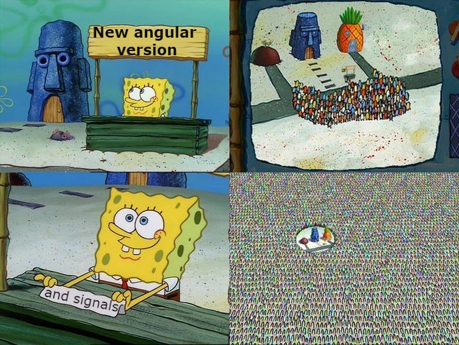
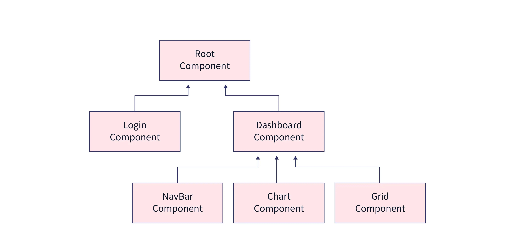

June 27, 2023 by Jovan Mitrovi캖
Angular Signali

Pozdrav svim ljubiteljima Angular razvojnog okvira, imamo za vas sjajne vesti. U najnovijoj verziji Angulara, verziji 16, imamo priliku da se upoznamo sa novim reaktivnim modelom u Angular-u, Signalima. Za one koje ne znaju, Angular je razvojni okvir za kreiranje mobilnih, desktop ali prvenstveno web aplikacija. Razvijen je od strane in쬰njera u Google-u i predstavlja jedan od najpopularnijih front-end okru쬰nja dana코njice. Zbog svoje kompleksnosti 캜esto predstavlja problem ljudima koji tek kre캖u da ga u캜e. Angular tim je odlu캜io da svim developerima, onima koji vec imaju iskustva i onima koji tek po캜inju, olak코aju svakodnevni rad uvodjenjem novog koncepta koji se naziva Signal. Pre nego 코to krenemo da se bavimo signalima trebalo bi da objasnimo sta je Zone.js i mehanizam za detekciju promena.

Zone.js
Za코to je do danas Zone.js jedna od klju캜nih bilblioteka svake Angular aplikacije? Zone.js je biblioteka koja se koristi da Angular-u signalizira kada je potrebno da pokrene mehanizam za detekciju promena. Prilikom pokretanja Angular aplikacije, Zone.js “monkey patch"-uje sve native API-jeve (u slucaju web aplikacije, native browser API-jeve). 맚a uop코te zna캜i termin monkey patching!? Monkey patching je termin koji ozna캜ava dinami캜ko modifikovanje koda u toku rada aplikacije. I dalje zvu캜i konfuzno? Uze캖emo setTimeout kao primer native browser API.
const originalSetTimeout = window.setTimeout;
window.setTimeout = (cb, delay) => {
// Ubacivanje dodatnog koda unutar native API-ja
console.log("I'm monkey patched");
return originalSetTimeout(cb, delay);
};
맚a mislite da 캖e se desiti kada bi pokrenuli funkciju
setTimeout(() => {
console.log("Hello");
}, 1000);
Ako je va코 odgovor da 캖e u konzoli pojaviti tekst “I’m monkey patched” i nakon jedne sekunde tekst “Hello” u pravu ste. Promenili smo svojstvo native API-ja tako 코to smo originalni API sa캜uvali u promenjivoj originalSetTimeout, nakon 캜ega smo redeklarisali taj isti API tako 코to smo mu dodelili vrednost starog i dodali novu liniju koda (linija 4). Kao 코to mo쬰te da vidite svako od nas mo쬰 da menja API-jeve po svojoj volji, zar to nije super! Zone.js biblioteka radi isto to, samo 코to su dodatne funckionalnosti koje dodaje vezane za mehanizam za detekciju promena unutar Angular okru쬰nja.
Mehanizam za detekciju promena
Kao 코to mo쬰te pretpostaviti po nazivu, mehanizam za detekciju promena je zadu쬰n za proveru promena unutar aplikacije. Kada ka쬰mo promene mislimo na bilo kakvu interakciju korisnika ili nekog drugog servisa sa na코om aplikacijom (klik korisnika na neki element ili asinhroni odgovor servera sa podacima). Da bi smo bolje razumeli kako mehanizam za detekciju promena funkcioni코e moramo da shvatimo osnovnu arhitekturu svake Angular aplikacije.
Komponenta
Najosnovniji element u Angular ekosistemu je komponenata. Komponenta je UI gradivni blok 캜ija svojstva mogu biti razli캜ita u zavisnosti od aplikacije koja se pravi. Na primer web sajt se sastoji iz odredjenih delova: zaglavlje (header), podno쬴ja stranice (footer), polja za unos teksta (search input). Svaka od ovih stavki mo쬰 predstavljati komponentu za sebe, mo쬰mo imati komponentu “searchComponent” koja se sastoji iz input polja i logike za pretra쬴vanje odredjenih sadr쬬ja. Ovo omogu캖ava komponentama da se korise na vi코e od jednog mesta na samom web sajtu, 코to nam daje mogu캖nost da sa ve캖om brzinom i sa boljom kontrolom razvijamo na코 web sajt (i naravno da na코 kod bude 캜istiji i lak코e odr쬴v).

Na slici mo쬰te primetiti odnos komponenata koji se mo쬰 prikazati kao stablo. U sr쬴 svake Angular aplikacije se nalazi root komponenta (ili App Component u pravim aplikacijama). Ona u sebi sadr쬴 sve ostale komponente koje smo mi prilikom razvoja napravili (neka vrsta omota캜a). Prilikom pokretanja bilo koje Angular aplikacije root komponenta (App Component) 캖e biti polazna tacka, tj root komponenta je jedina komponenta koja se bootstrapuje pri inicijalnom pokretanju.
Kako funkcioni코e mehanizam za detekciju promena
Kada dodje do neke akcije na stranici (klik mi코a na stranici npr), Angular prolazi kroz celo stablo komponenti i tom prilikom proverava da li je doslo do promene vrednosti delova stanja aplikacije koji se prikazuju na template-u, kako bi uskladio prikazane vrednosti sa trenutnim stanjem u aplikaciji. Mo쬰te pretpostaviti da ovo definitivno uti캜e na performanse svake Angular aplikacije (zamislite sliku iznad sa stablom od 100 komponenata), ali sa druge strane postoje optimizacije koje mi kao developeri mo쬰mo da primenimo. Jedna od tih optimizacija je OnPush Change Detection strategija kojom se ne캖emo baviti u ovom blogu, ali ono 코to mo쬰mo da ka쬰mo jeste da se detekcija promena izvr코ava efikasnije koriste캖i tu metodu (Angular ne캖e prolaziti kroz celo stablo da bi proverio gde se promena desila, mo캖i 캖e da “filtrira” odredjene delove stabla). Vi코e o OnPush Change Detection strategiji mo쬰te pro캜itati na ovom blogu: https://huantao.medium.com/angular-change-detection-onpush-with-examples-5187f8b2d6e6.
Signali
Dolazimo do “mesa” na코eg bloga. Signali predstavljaju novu primitivu u Angularu (SolidJS je prvi frejmvork koji ih je popularizovao, iako se kao koncept koristio u Knockout.js-u). mo쬰te ih zamisliti kao omota캜 oko primitivne vrednosti.
import signal from "@angular/core"
age = signal(25);
people = signal<string[]>([]);
Signale kreiramo kori코캖enjem signal funkcije iz @angular/core paketa, inicijalizujemo ih pozivanjem signal konstruktor funkcije. U ovom primeru mo쬰mo da primetimo da signal mora da ima po캜etnu vrednost (sli캜no kao BehaviorSubject u rxjs-u). Na koji nacin mo쬰te da koristite signale? U slede캖em kodu mo쬰te videti neke od funkcionalnosti.
console.log(this.age()); // Prikazi vrednost signala
this.age.set(10); // Promena inicijalne vrednost signala
this.age.update((currentAge) => currentAge + 1); // A쬿rira vrednost signala koristeci pro코lu vrednost kao prvi argument
this.people.mutate((peopleList) => {
peopleList.push("Marko"); // Sli캜no kao update, samo 코to mo쬰mo promeniti vrednost na mutabilan na캜in
});
Prime캖ujete da kada 쬰limo da pristupimo vrednosti signala, taj signal moramo pozvati kao funkciju bez parametara (getter funkciju). Ovo izgleda super, ali za sada sve ovo dosta podse캖a na Map objekat u Javascriptu. Sada 캖emo predstaviti jednu dodatnu fukncionalnost signala koja 캖e sve to promeniti.
<div>{{ age() }}</div>
Signale mo쬰mo direktno da koristimo u na코em template-u, i prilikom svake promene signala on 캖e obavestiti sve korisnike tog signala da mu se vrednost promenila. Ovo vas mo쬯a podse캖a na observable pattern, samo 코to postoji par razlika (signali i jesu, kao i rxjs primitive, reaktivni).
<div>{{ age | async }}</div>
age = new BehaviorSubject(25);
Prva jeste da ne moramo nigde da se subscribujemo na signal (samo ga pozivamo na template-u, izbegavaju캖i mogu캖nost potencijalnog memory leak-a), druga, i mnogo bitnija, jeste da vam za ovo uop코te nije potrebna Zone.js biblioteka!!! Prime캖ujete takodje da rxjs mo쬰 biti zamenjen sa signalima (o ovome 캖e biti malo vi코e re캖i kasnije u tekstu). Napomenuli smo iznad da signali mogu imati korisnike, 코ta to zna캜i? Signale delimo na:
- one u koje mo쬰mo upisivati vrednost (WritableSignals).
- one koji su izvedeni iz drugih signala (readonly)
Writable signale mo쬰mo jo코 i nazvati proizvodja캜ima, jer oni proizvode neku novu vrednost (vidite primer age signala iznad). Readonly signali direktno zavise od drugog signala (i njihova vrednost mo쬰 samo da se 캜ita, nije je moguce promeniti sa nekom od funkcija). Kako bi bilo jasnije 코ta su izvedeni signali, prikaza캖emo primer jednog od njih
olderBrotherAge = computed(() => this.age() + 4);
Da bismo napravili readonly signal koristimo computed funkciju, u koju prosledjujemo signal 캜ije promene 쬰limo da pratimo. Razlika izmedju computed (ili readonly) signala u poredjenju sa generi캜kim (ili Writable) signalom jeste u tome da se poslednja vrednost computed signala ke코ira, tako da ukoliko nije do코lo do promene vrednosti signala koji se koristi unutar callback funkcije izvedenog (computed) signala, callback se nece ponovo izvr코iti.
Jo코 jedna funkcija koju 캖emo napomenuti je efekat.
effect(() => {
console.log("Brothers age changed to: ", this.olderBrotherAge());
});
Efekat funkcija zakazuje i pokre캖e sporedne efekte u reaktivnom kontekstu. Callback funkcija efekta se ponovo izvr코ava (re-execute) kada dodje do promene bilo kog signala koji se koriste unutar njega (primer iznad, ako bi do코lo do promene olderBrotherAge signala, console log bi se ponovo izvr코io). Kako uop코te svi ovi signali i sporedni efekti komuniciraju jedni sa drugima?
Push/Pull
<div>{{age()}}</div>
<div>{{olderBrotherAge()}}</div>
<button (click)="increase()">Pove캖aj godine</button>
age = signal(8);
olderBrotherAge = computed(() => this.age() < 40 ? this.age() + 4 : 44);
constructor() {
effect(() => {
console.log(this.olderBrotherAge() >= 18 ? `Brother is an adult and he is: ${this.olderBrotherAg()} years old`: 'Brother is not an adult yet');
})
}
increase() {
this.age.update((previousAge) => previousAge + 1);
}
Napisali smo jedan primer mini aplikacije u kojoj imamo dugme preko koga mo쬰mo da pove캖amo godine sebi. Na코 brat je stariji od nas 4 godine tako da 캖e njegove godine uvek biti na코e godine plus 4 (linija 2). Nakon 코to mi napunimo 40 godina neko iz ministarstva unutra코njih poslova slu캜ajno bri코e sve informacije o na코em bratu iz baze podataka, tako da po poslednjim informacijama znamo da on ima 44 godine. Imamo jedan efekat koji oslu코kuje da li je na코 brat punoletan (linija 5). 맚a se de코ava kada kliknemo na dugme “Pove캖aj godine” (ignorisa캖emo po캜etno stanje za sad, s obzirom da se isto de코ava prilikom inicijalnog pokretanja).
1. Promena na코eg Writable signala (u ovom primeru age signal) pokre캖e Push/Pull algoritam
2. Na코 proizvodja캜 age push-uje svoju “prljav코tinu” (flag koji ozna캜ava da se vrednost promenila), obave코tavaju캖i sve njegove korisnike, u ovom slu캜aju olderBrotherAge da je njegova vrednost stara i da bi trebalo da se promeni
3. olderBrotherAge isto ima svoje korisnike, tako da ih i on obave코tava da im je vrednost stara (console.log u efektu, linija 6)
4. efekat (console.log), zatra쬿ju najnoviju vrednost od olderBrotherAge signala. olderBrotherAge ponovo zatra쬿je najnoviju vrednost od age signala. Age signal je a쬿rirao svoju vrednost i svoju verziju vrednosti (objasni캖emo 코ta je ovo u nastavku) i obave코tava olderBrotherAge signal o novom stanju
5. olderBrotherAge rekalkuli코e svoju vrednost, prime캖uje da mu se vrednost promenila i menja svoju verziju vrednosti
6. Efekat shvata da je verzija vrednosti signala koji se koristi u njemu promenjena, povla캜i novu vrednost i prikazuje ‘Brother is not an adult yet’ u konzoli
Kakav je ovo novi termin, “verzija vrednosti”. U su코tini svaki signal u sebi sadr쬴 numeri캜ku verziju vrednosti koju pove캖ava u zavisnosti da li se njegova “prava” vrednost promenila. Ovo predstavlja semanti캜ki identitet te vrednosti. Nadoveza캖emo se na prethodni primer kako bi bolje objasnili. 맚a 캖e se desiti kada napunimo 41 godinu?
Kako ne bi ponavljali sve korake re캖i캖emo samo 코ta se de코ava pri kraju push/pull algoritma.
5. olderBrotherAge opet rekalkuli코e svoju vrednost (s obzirom da se age signal promenio), ali sada njegova vrednost ostaje konstantna, 44. U ovom slu캜aju taj signal NE캕E promeniti svoju verziju vrednosti
6. Na kraju efekat dobija informaciju da se verzija vrednosti njegovog prozivodja캜a nije promenila i nema potrebe da se izvr코i
S obzirom na ovakav nacin funkcionisanja signala (na pra캖enje zavisnost izmedju witable, readonly i efekata), nema potrebe da se brinete da 캖e ikada do캖i do memory leak-a.
Zaklju캜ak
Nakon svega ovoga, mo쬰mo izvesti slede캖e benefite signala:
- Zone.js biblioteka vi코e nije neophodna, 코to 캖e smanjiti bundle size i u캜initi aplikaciju dosta efikasnijom (vi코e nema potrebe za prola쬰nje kroz stablo komponenata, detekcija promena se vr코i lokalno). Jedna napomena oko ovoga jeste da 캖e ovo biti mogu캖e tek od verzije 17 Angulara (za sada detekcija promena funkcioni코e i dalje na globalnom nivou).
- Rxjs 캖e biti manje kori코캖en (ovo mo쬰 biti i mana za one koji imaju dosta iskustva rade캖i sa tom biblikotekom). Ali ne brinite iako su signali bolji u ve캖ini slu캜ajeva, za bilo kakve kompleksnije asinhrone dogadjaje rxjs i dalje pru쬬 najbolju podr코ku (rad sa asinhronim podacima sa servera ili kompleksnijim eventEmitterim-a).

캛ekaj malo, za코to bi koristili rxjs uop코te u na코im aplikacijma, rekli smo da 쬰limo da izbacimo Zone.js iz upotrebe, ali za prikazivanje observabli potreban nam je async pipe (mo쬰mo i deklarisati promenjivu kojoj bi prosledili vrednost observable-a prilikom subscripcije, ali opet nam je potreban Zone.js da bi pratili promene tog observable-a)? Angular tim 캖e u budu캖im verzijama uvesti funkcije za automatsku konverziju observabli u signale i obrnuto (toObservable() i toSignal() ovo je samo pretpostavka kako bi izgledale).
Sta 캖e se desi sa bibliotekama za upravljanje stanjem u aplikaciji, koji kao svoju bazu koriste rxjs (mislimo na Ngrx)? Ngrx tim takodje otvoreno prihvata sve promene koje signali donose uvode캖i novi na캜in upravljanja stanjem sa signalStore-om (integracija je ve캖 prisutna u verziji 16 Angulara sa selectSignal metodom, koja za razliku od klasi캜ne select metode, za svoju povratnu vrednost ima Signal umesto Observable-a). RFC signalStore-a mo쬰te videti na ovom linku: https://github.com/ngrx/platform/discussions/3796.
Ako budete imali jo코 neka pitanja slobodno ih mo쬰te postaviti tech9320 timu direktno 游
Pa ljubitelji Angulara, signali 캖e definitvno promeniti ceo koncept rada u Angular okru쬰nju. Ovo deluje malo zastra코uju캖e, ali u isto vreme jako ohrabruju캖e zato 코to 캖emo u budu캖nosti videti kako se na코e voljeno okru쬰nje koristi u sve ve캖em broju aplikacija. Ako 쬰lite vi코e informacija o signalima mo쬰te pogledati slede캖e linkove:
- Sjajan blog o signalima: https://dev.to/this-is-angular/angular-signals-everything-you-need-to-know-2b7g
- Signal playground: https://stackblitz.com/edit/angular-signals-deborahk?file=src%2Fmain.ts
- Kratak video o signalima: https://www.youtube.com/watch?v=4FkFmn0LmLI&ab_channel=JoshuaMorony